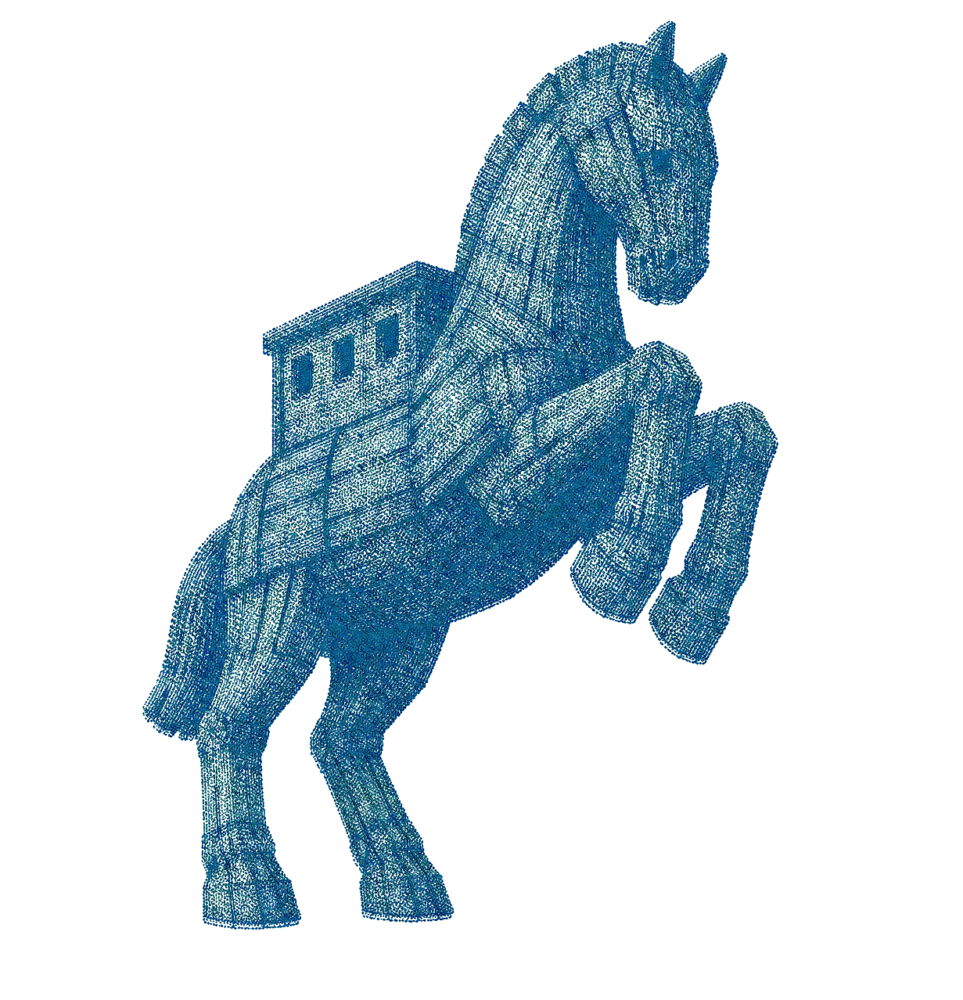

호메로스의 《오디세이아》는 신의 분노 속에서 수 년간 바다를 표류한 영웅 오디세우스의 귀향을 다룬 서사시이자, 서구 문학사에서 '영웅의 여정'이라는 원형을 정립한 최초의 모험담이다. 시련을 겪으며 성장하고 마침내 귀환하는 이 서사 구조는 오늘날 모든 현대 소설과 영화의 뿌리가 되었으며, 제목인 '오디세이' 자체가 '파란만장한 여정'을 뜻하는 대명사로 굳어질 만큼 압도적인 위상을 차지한다.
특히 신이 제시한 영생도 거절한 채 필멸자로서 고향의 흙을 밟고자 했던 오디세우스의 집념은 운명에 맞서는 인간 이성의 위대함을 상징하며, 이후 제임스 조이스의 《율리시스》를 비롯한 수많은 문학적 재창조를 낳으며 인류가 지닌 모든 탐색과 귀환 서사의 영원한 출발점이 되었다.